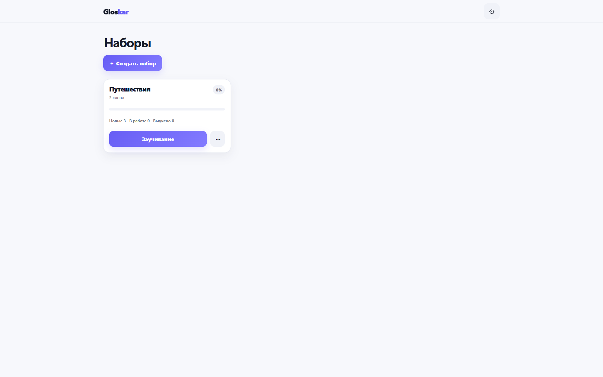
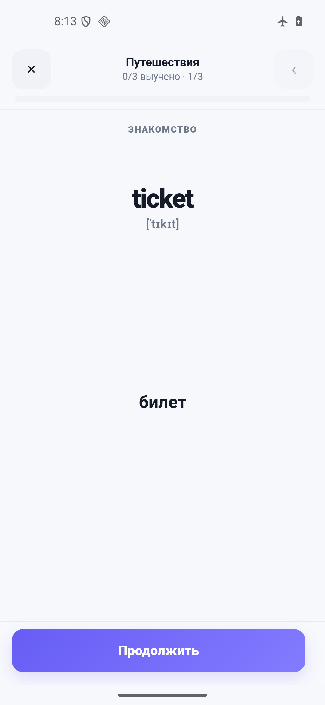
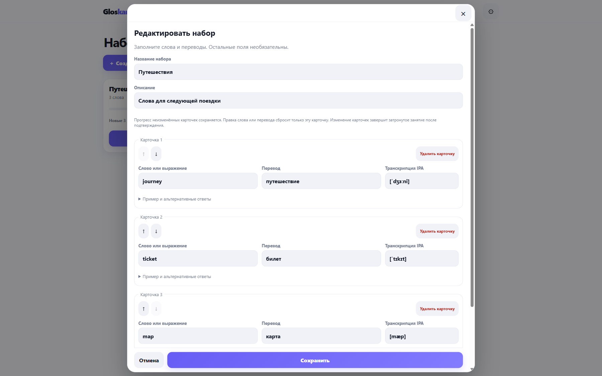
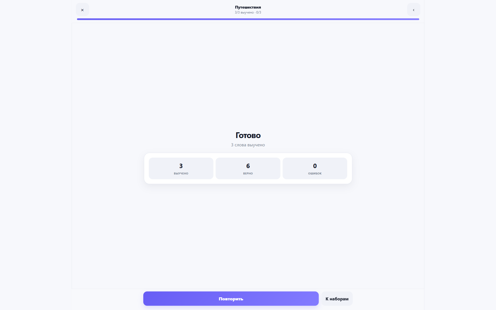

Windows
Самостоятельное приложение · x64
Скачать для WindowsУстановщик пока без доверенной подписи издателя. Возможны предупреждения Windows.
SHA-256 · 107.41 МиБ
ab9beaf9b18ad65c45ee608a0db1220568a5620219cf314c0b926c8e4b7230f5ANDROID И WINDOWS · ПОЛНОСТЬЮ ОФЛАЙН
Собирайте нужную лексику, редактируйте карточки и учите слова в своём темпе. Без интернета, регистрации и подписок.
Все учебные функции бесплатны. Для занятий не нужен сервер или аккаунт.


Своя лексикаНаборы вручную или импорт JSON
Обучение и повторениеКарточки, тест и письменный ответ
Данные у васЛокальное хранение и резервные копии

ВАШИ МАТЕРИАЛЫ
Добавляйте слова, переводы, транскрипции, примеры и варианты ответа. Проверяйте импорт до сохранения — редактировать JSON вручную не обязательно.
ОТ ЗНАКОМСТВА К ПОВТОРЕНИЮ
Знакомьтесь с карточками, выбирайте ответы и пишите их по памяти. Возвращайтесь к сложной лексике и следите за статистикой.
Приложение работает без сети сразу после установки на совместимое устройство. Windows-версия включает собственный движок — установленный браузер для занятий не требуется.
Как проверить офлайн-работу →
ИИ — ПО ВАШЕМУ ВЫБОРУ
В Gloskar есть готовый промпт. Саму нейросеть вы выбираете и используете отдельно.
Откройте «Создать набор → С помощью ИИ».
Самостоятельно отправьте материалы выбранной нейросети.
Проверьте ответ в редакторе и сохраните набор.
Встроенных ИИ-сервисов и API-ключей нет. Все учебные функции доступны и без нейросети.
Gloskar
Версия 0.9.3
Самостоятельное приложение · x64
Скачать для WindowsУстановщик пока без доверенной подписи издателя. Возможны предупреждения Windows.
ab9beaf9b18ad65c45ee608a0db1220568a5620219cf314c0b926c8e4b7230f5Android 10+ · WebView 133+ · APK
Скачать APK для AndroidВсе учебные функции работают без сети сразу после установки на совместимое устройство.
df32ef1c445211dd8492a6d2db6f63889854768fa536b43472f8017db296498aУстановщики размещаются в GitHub Releases. Статус и контрольная сумма показаны рядом с каждым файлом.
Установка, обновление и перенос данных →БЕЗ АККАУНТОВ И ОБЛАКА
Создание, редактирование, импорт, обучение, повторение, статистика, экспорт и восстановление работают локально. Автоматической синхронизации между устройствами нет.
Gloskar разработан и поддерживается одним человеком. Добровольная поддержка помогает его дальнейшему развитию и не открывает платных функций.